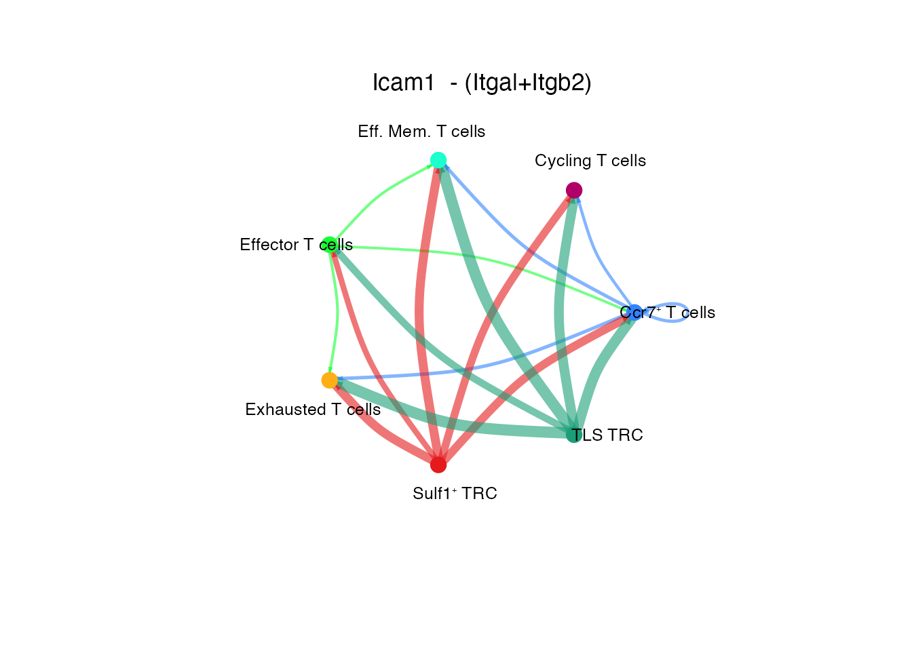
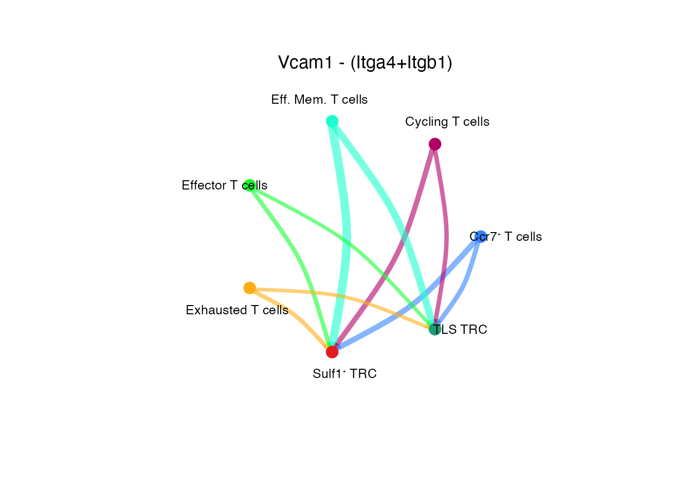
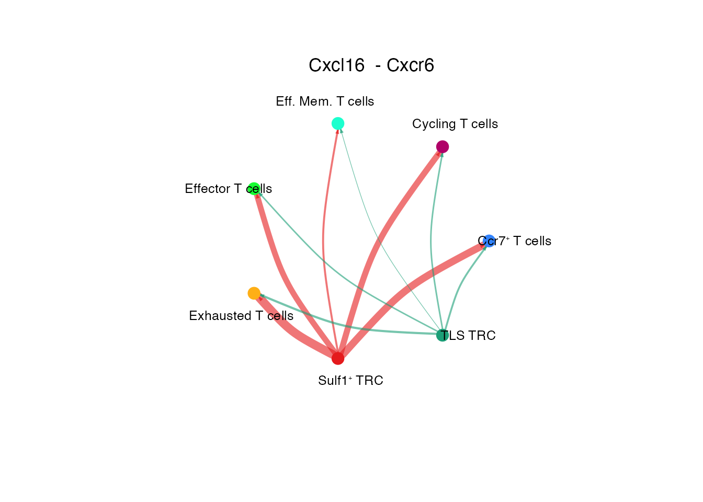
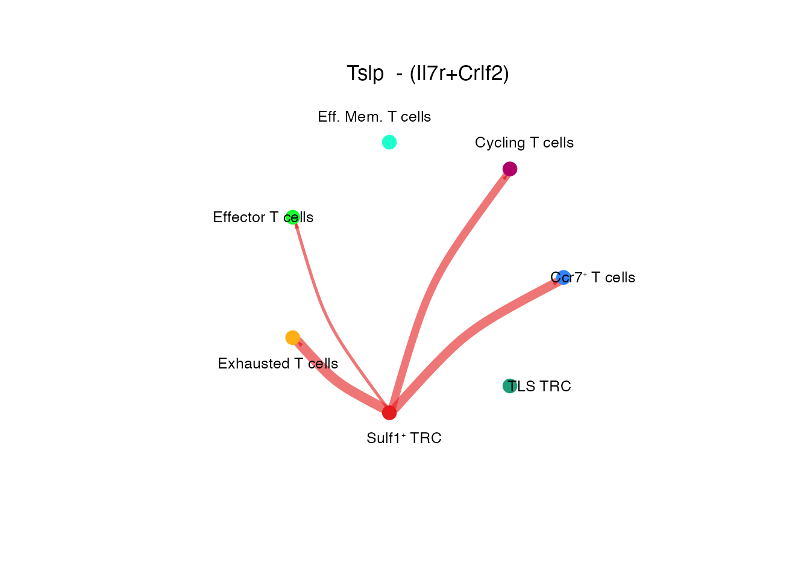
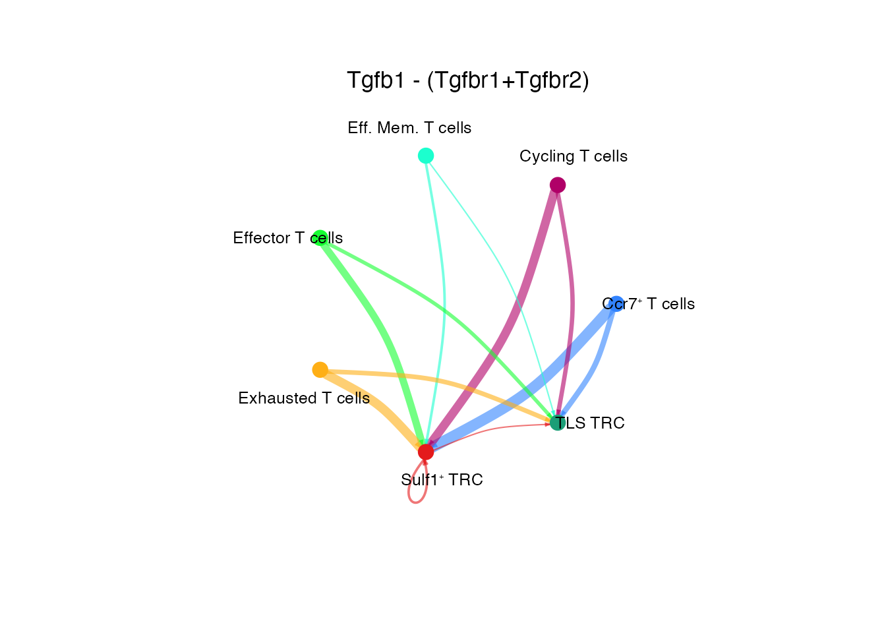
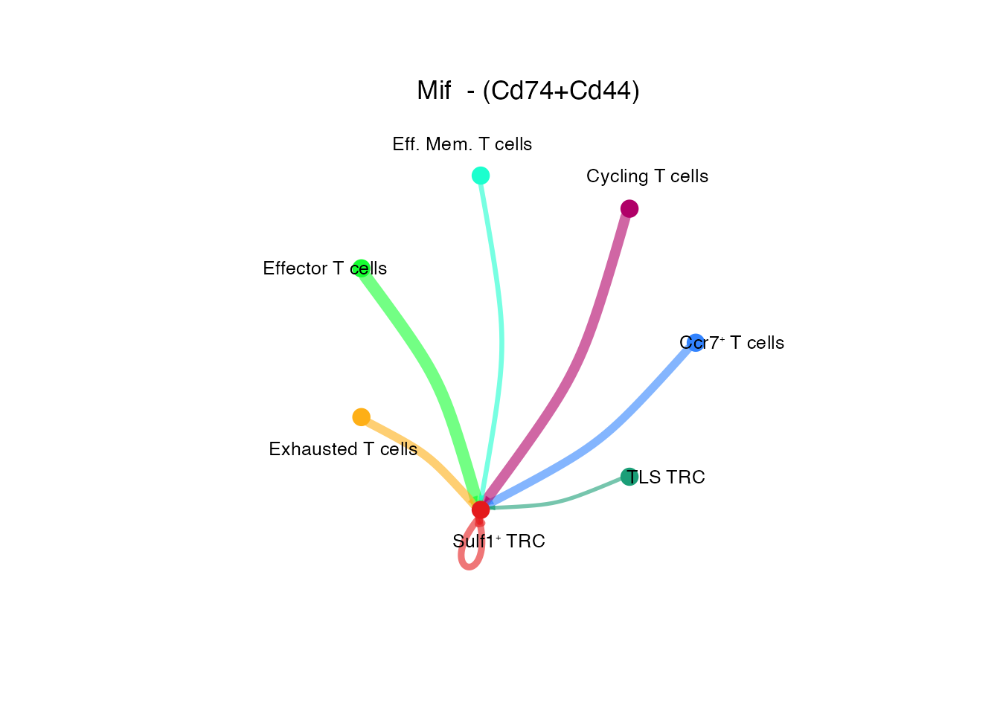

Total CD8 T cells in mCOV-FIt31-gp33
Chrysa Papadopoulou
Last updated: 2024-09-23
Checks: 7 0
Knit directory: CCL19_FRCs_lung_cancer/
This reproducible R Markdown analysis was created with workflowr (version 1.7.1). The Checks tab describes the reproducibility checks that were applied when the results were created. The Past versions tab lists the development history.
Great! Since the R Markdown file has been committed to the Git repository, you know the exact version of the code that produced these results.
Great job! The global environment was empty. Objects defined in the global environment can affect the analysis in your R Markdown file in unknown ways. For reproduciblity it’s best to always run the code in an empty environment.
The command set.seed(20240808) was run prior to running
the code in the R Markdown file. Setting a seed ensures that any results
that rely on randomness, e.g. subsampling or permutations, are
reproducible.
Great job! Recording the operating system, R version, and package versions is critical for reproducibility.
Nice! There were no cached chunks for this analysis, so you can be confident that you successfully produced the results during this run.
Great job! Using relative paths to the files within your workflowr project makes it easier to run your code on other machines.
Great! You are using Git for version control. Tracking code development and connecting the code version to the results is critical for reproducibility.
The results in this page were generated with repository version 116d217. See the Past versions tab to see a history of the changes made to the R Markdown and HTML files.
Note that you need to be careful to ensure that all relevant files for
the analysis have been committed to Git prior to generating the results
(you can use wflow_publish or
wflow_git_commit). workflowr only checks the R Markdown
file, but you know if there are other scripts or data files that it
depends on. Below is the status of the Git repository when the results
were generated:
Ignored files:
Ignored: .DS_Store
Ignored: analysis/.DS_Store
Ignored: analysis/figure/
Ignored: data/Final_submission/
Ignored: data/Human/
Ignored: data/Mouse/
Ignored: data/Public/
Ignored: output/GSEA_AdvFB_SULF1/
Ignored: output/GSEA_AdvFB_TLS/
Ignored: output/GSEA_CCR7_T/
Ignored: output/GSEA_CD8_T/
Ignored: output/GSEA_CYCL_T/
Ignored: output/GSEA_EXH_T/
Ignored: output/GSEA_SMC_PRC/
Untracked files:
Untracked: README.html
Untracked: analysis/.h5seurat
Untracked: analysis/Compare_tumors.Rmd
Untracked: analysis/NSCLC_PDAC_CAFs.Rmd
Untracked: analysis/Seurat_to_SCE.Rmd
Untracked: analysis/compression.Rmd
Untracked: analysis/index_hidden.Rmd
Untracked: analysis/mcov_R.Rmd
Note that any generated files, e.g. HTML, png, CSS, etc., are not included in this status report because it is ok for generated content to have uncommitted changes.
These are the previous versions of the repository in which changes were
made to the R Markdown (analysis/Total_CD8_DTR_Tetra.Rmd)
and HTML (docs/Total_CD8_DTR_Tetra.html) files. If you’ve
configured a remote Git repository (see ?wflow_git_remote),
click on the hyperlinks in the table below to view the files as they
were in that past version.
| File | Version | Author | Date | Message |
|---|---|---|---|---|
| Rmd | 116d217 | Pchryssa | 2024-09-23 | Total CD8 T in mCOV-FIt31-gp33 |
Load packages
suppressPackageStartupMessages({
library(here)
library(purrr)
library(dplyr)
library(stringr)
library(patchwork)
library(Seurat)
library(Matrix)
library(gridExtra)
library(gsubfn)
library(ggsci)
library(biomaRt)
library(tidyverse)
library(msigdbr)
library(stats)
library(clusterProfiler)
library(dict)
library(openxlsx)
library(DOSE)
library(enrichplot)
library(dittoSeq)
library(CellChat)
})Set directory
basedir <- here()Total CD8 T cells in DTR
Read CD8⁺ T cells in mCOV-FIt31-gp33
CD8_T <- readRDS(paste0(basedir,"/data/Mouse/CD3_CD8_annot_final.rds"))Set color palette
cluster_palette <- Polychrome::palette36.colors()
names(cluster_palette) <-unique(CD8_T$annot) CD8⁺ T cells mCOV-FIt31-gp33
Supplementary Figure 11G
DimPlot(CD8_T, reduction = "umap", group.by = "annot")+
theme_bw() +
theme(axis.text = element_blank(), axis.ticks = element_blank(),
panel.grid.minor = element_blank(),
panel.grid.major = element_blank()) +
xlab("UMAP1") +
ylab("UMAP2") + ggtitle(paste0("CD8", "\U207A ", "T cells (mCOV-FIt31-g33)"))
Dotplot CD8⁺ T cell subsets (Supplementary Figure 11H)
data_conv <-CD8_T
data_conv <-Remove_ensebl_id(data_conv)
gene_list <-c("Pclaf","Top2a","Mki67","Klrg1","Gzma","Cxcr3","Gzmk","Ly6a","Ifng","Ccl4","Xcl1","Gzmb","Havcr2","Ctla4","Prf1","Lag3","Pdcd1","Tigit", "Tox","Ccl5","Bcl2","Il7r","Ccr7","Tcf7","Sell")
dittoDotPlot(data_conv, vars = gene_list, group.by = "annot", size = 5,legend.size.title = "Expression (%)",scale = TRUE) + theme(text = element_text(size = 10)) +ylab( " ") 
Pathway analysis (Supplementary Figure 11I)
# Step 1 : Set output directory
subDir <- "GSEA_CD8_T/"
saving_path <- paste0(basedir,"/output/")
final_dir <- file.path(saving_path, subDir)
dir.create(final_dir, showWarnings = FALSE,recursive = TRUE)
map_df <- ExtractMouseGeneSets(final_dir)
# Step 2: Customize parameters
httr::set_config(httr::config(ssl_verifypeer = FALSE))
organism <- "org.Mm.eg.db"
disease_phase <- "Depl_vs_NDepl"
datatype <- "SYMBOL"
Idents(CD8_T) <- CD8_T$depleted
DEmarkers <-FindAllMarkers(CD8_T, only.pos=T, logfc.threshold = 0.25,
min.pct = 0.25)
Vec <-unique(CD8_T$depleted)
EnrichParameters_TLS <-customize_parameters(Vec,DEmarkers,organism,datatype,disease_phase,saving_path) [1] "Finish Enrichment_Analysis for GO DTR⁺"
[1] "Finish Enrichment_Analysis for GO DTR−"# Step 3: Enrichment Analysis
for (i in seq(1,length(EnrichParameters_TLS$enrichcl_list))){
terms<- EnrichParameters_TLS$enrichcl_list[[i]]
# Filter on the most significant pathways (keep rows where p.adjust<= 0.05)
terms<- terms@result[terms@result$p.adjust <= 0.05,]
population <- Vec[i]
population<- gsub("/", "_", population)
write.xlsx(terms, paste0(final_dir,"/","GO_Pathways_",population,".xlsx"),row.names = TRUE)
}
#Step 4: Plot enriched pathways
pathways <-c("cytokine-mediated signaling pathway", "canonical Wnt signaling pathway","V(D)J recombination",
"alpha-beta T cell differentiation", "interleukin-4 production", "alpha-beta T cell activation")
CD8_terms <- EnrichParameters_TLS$enrichcl_list[[2]]@result
selec_pathways <- CD8_terms[CD8_terms$Description %in% pathways,]
selec_pathways$Description <- factor(selec_pathways$Description, levels = rev(pathways))
selec_pathways <- selec_pathways[order(selec_pathways$Description), ]
ggplot(data=selec_pathways, aes(x=Description, y=qscore, fill = analysis)) + xlab(NULL) +
geom_bar(stat="identity",position="dodge",colour = "black",show.legend = FALSE, width= 0.8, size = 1 ) + coord_flip() +
scale_y_continuous(expand = expansion(c(0,0)), limits = c(0.0, 3),breaks = c(0,1,2,3)) +
scale_x_discrete(labels = function(x) stringr::str_wrap(x, width = 80)) +
theme(aspect.ratio = 1.5, legend.justification = "top",
plot.title = element_text(hjust = 0.5,size = 12,face="bold"),axis.line = element_line(colour = "black"),
panel.grid.major = element_blank(),
panel.grid.minor = element_blank(),
axis.text.x = element_text(angle = 0, vjust = 0.5,colour = "black", size = 10),
axis.text.y = element_text(angle = 0, vjust = 0.8,colour = "black", size = 10),
axis.title.y = element_text(size = rel(2), angle = 45),
axis.title.x = element_text(size = rel(1.5), angle = 0),
axis.text = element_text(size = 8),
panel.background = element_blank(), legend.position = "none") +
scale_fill_manual(values = "dark gray") + ggtitle(paste0("Enriched in Ccl19-EYFP (DTR","\U2212)"))
Interactome analysis with Cellchat (Suoqin Jin et al., 2021) between TLS TRC, Sulf1⁺ TRC and Tetramer⁺ CD8⁺ T cells
Read GP33/34⁺ CD8⁺ T cells sorted from LLC-gp33 bearing DTR⁺ and DTR\(^−\) lungs on day 23, after mCOV-Flt3l-gp33 immunization
Tetra_CD8 <- readRDS(paste0(basedir,"/data/Mouse/Tetra_CD8_EXH.rds"))Read CCL19-EYFP⁺ mCOV-FIt31-g33 cell data
CCL19_EYFP_mCOV <- readRDS(paste0(basedir,"/data/Mouse/mCOV.rds"))Subset mCOV-FIt31-g33 data on Sulf1⁺ TRC and TLS TRC
TRCs <- subset(CCL19_EYFP_mCOV, annot %in% c(paste0("Sulf1", "\u207A ", "TRC"), "TLS TRC"))Merge data
data_merge <- merge(Tetra_CD8, y = c(TRCs),
add.cell.ids = c("Tetra_CD8","TRCs"),
project = "merge_TRC_CD8_T")
#Preprocessing
resolution <- c(0.1, 0.25, 0.4, 0.6,0.8, 1.)
data_merge <- preprocessing(data_merge,resolution)Modularity Optimizer version 1.3.0 by Ludo Waltman and Nees Jan van Eck
Number of nodes: 4886
Number of edges: 175919
Running Louvain algorithm...
Maximum modularity in 10 random starts: 0.9614
Number of communities: 5
Elapsed time: 0 seconds
Modularity Optimizer version 1.3.0 by Ludo Waltman and Nees Jan van Eck
Number of nodes: 4886
Number of edges: 175919
Running Louvain algorithm...
Maximum modularity in 10 random starts: 0.9218
Number of communities: 7
Elapsed time: 0 seconds
Modularity Optimizer version 1.3.0 by Ludo Waltman and Nees Jan van Eck
Number of nodes: 4886
Number of edges: 175919
Running Louvain algorithm...
Maximum modularity in 10 random starts: 0.8930
Number of communities: 7
Elapsed time: 0 seconds
Modularity Optimizer version 1.3.0 by Ludo Waltman and Nees Jan van Eck
Number of nodes: 4886
Number of edges: 175919
Running Louvain algorithm...
Maximum modularity in 10 random starts: 0.8560
Number of communities: 7
Elapsed time: 0 seconds
Modularity Optimizer version 1.3.0 by Ludo Waltman and Nees Jan van Eck
Number of nodes: 4886
Number of edges: 175919
Running Louvain algorithm...
Maximum modularity in 10 random starts: 0.8301
Number of communities: 11
Elapsed time: 0 seconds
Modularity Optimizer version 1.3.0 by Ludo Waltman and Nees Jan van Eck
Number of nodes: 4886
Number of edges: 175919
Running Louvain algorithm...
Maximum modularity in 10 random starts: 0.8069
Number of communities: 12
Elapsed time: 0 secondsConvert seurat object to cellchat object
data_merge$cell_type <-data_merge$annot
cellchat <- Cellchat_Analysis(data_merge)[1] "Create a CellChat object from a data matrix"
Set cell identities for the new CellChat object
The cell groups used for CellChat analysis are Ccr7⁺ T cells Cycling T cells Eff. Mem. T cells Effector T cells Exhausted T cells Sulf1⁺ TRC TLS TRC cellchat <-CellChatDownstreamAnalysis(cellchat,"mouse",thresh = 0.05)Issue identified!! Please check the official Gene Symbol of the following genes:
H2-BI H2-Ea-ps
triMean is used for calculating the average gene expression per cell group.
[1] ">>> Run CellChat on sc/snRNA-seq data <<< [2024-09-23 15:50:29.091434]"
[1] ">>> CellChat inference is done. Parameter values are stored in `object@options$parameter` <<< [2024-09-23 15:51:36.258223]"Set color palette
palet <-c("#16FF32", "#3283FE", "#FEAF16" , "#B00068" ,"#1CFFCE","#E41A1C","#1B9E77")
names(palet) <-c("Effector T cells",paste0("Ccr7", "\U207A ","T cells"),"Exhausted T cells","Cycling T cells","Eff. Mem. T cells",paste0("Sulf1", "\u207A ", "TRC"), "TLS TRC") Interactome analysis (Supplementary Figure 11J)
gg <- netAnalysis_signalingRole_scatter(cellchat,color.use = palet)
gg <- gg + theme(aspect.ratio = 1.3) + ggtitle("mCOV-FIt31-gp33")
gg
We can take a look at all significant interactions and involved signaling pathways
Cell-cell communication mediated by specific ligand-receptor (L-R) pairs
Icam1 - (Itgal+/tgb2) (Supplementary Figure 11K)
palet<-palet[order(match(names(palet),rownames(cellchat@net$count)))]
# Circle plot
netVisual_individual(cellchat, signaling = pathways.show.all, pairLR.use = "ICAM1_ITGAL_ITGB2", color.use = palet, layout = "circle")
[[1]]Vcam1 - (Itga4+Itgb1) (Supplementary Figure 11K)
# Circle plot
netVisual_individual(cellchat, signaling = pathways.show.all, pairLR.use = "ITGA4_ITGB1_VCAM1", color.use = palet, layout = "circle")
[[1]]Cxcl16 - Cxcr6 (Supplementary Figure 11L)
# Circle plot
netVisual_individual(cellchat, signaling = pathways.show.all, pairLR.use = "CXCL16_CXCR6", color.use = palet, layout = "circle")
[[1]]Tslp - (Il7r+Crlf2) (Supplementary Figure 11L)
# Circle plot
netVisual_individual(cellchat, signaling = pathways.show.all, pairLR.use = "TSLP_IL7R_CRLF2", color.use = palet, layout = "circle")
[[1]]Tgfb1 - (Tgfbr1+Tgfbr2) (Supplementary Figure 11M)
# Circle plot
netVisual_individual(cellchat, signaling = pathways.show.all, pairLR.use = "TGFB1_TGFBR1_TGFBR2", color.use = palet, layout = "circle")
[[1]]Mif - (Cd74+ Cd44) (Supplementary Figure 11M)
# Circle plot
netVisual_individual(cellchat, signaling = pathways.show.all, pairLR.use = "MIF_CD74_CD44", color.use = palet, layout = "circle")
[[1]]Session info
sessionInfo()R version 4.3.1 (2023-06-16)
Platform: aarch64-apple-darwin20 (64-bit)
Running under: macOS Ventura 13.6.9
Matrix products: default
BLAS: /Library/Frameworks/R.framework/Versions/4.3-arm64/Resources/lib/libRblas.0.dylib
LAPACK: /Library/Frameworks/R.framework/Versions/4.3-arm64/Resources/lib/libRlapack.dylib; LAPACK version 3.11.0
locale:
[1] en_US.UTF-8/en_US.UTF-8/en_US.UTF-8/C/en_US.UTF-8/en_US.UTF-8
time zone: Europe/Zurich
tzcode source: internal
attached base packages:
[1] stats graphics grDevices utils datasets methods base
other attached packages:
[1] CellChat_1.6.1 Biobase_2.60.0 BiocGenerics_0.46.0
[4] igraph_1.5.0.1 dittoSeq_1.12.1 enrichplot_1.20.0
[7] DOSE_3.26.1 openxlsx_4.2.5.2 dict_0.10.0
[10] clusterProfiler_4.8.2 msigdbr_7.5.1 lubridate_1.9.2
[13] forcats_1.0.0 readr_2.1.4 ggplot2_3.4.2
[16] tidyverse_2.0.0 biomaRt_2.56.1 ggsci_3.0.0
[19] gsubfn_0.7 proto_1.0.0 gridExtra_2.3
[22] Matrix_1.6-0 SeuratObject_4.1.3 Seurat_4.3.0.1
[25] patchwork_1.1.2 stringr_1.5.0 dplyr_1.1.2
[28] purrr_1.0.1 here_1.0.1 magrittr_2.0.3
[31] circlize_0.4.15 tidyr_1.3.0 tibble_3.2.1
[34] workflowr_1.7.1
loaded via a namespace (and not attached):
[1] IRanges_2.34.1 progress_1.2.2
[3] goftest_1.2-3 Biostrings_2.68.1
[5] vctrs_0.6.3 spatstat.random_3.1-5
[7] digest_0.6.33 png_0.1-8
[9] shape_1.4.6 registry_0.5-1
[11] git2r_0.33.0 ggrepel_0.9.3
[13] org.Mm.eg.db_3.17.0 deldir_1.0-9
[15] parallelly_1.36.0 MASS_7.3-60
[17] reshape2_1.4.4 httpuv_1.6.11
[19] foreach_1.5.2 qvalue_2.32.0
[21] withr_2.5.0 xfun_0.39
[23] ggfun_0.1.1 ggpubr_0.6.0
[25] ellipsis_0.3.2 survival_3.5-5
[27] memoise_2.0.1 gson_0.1.0
[29] systemfonts_1.0.4 ragg_1.2.5
[31] tidytree_0.4.4 zoo_1.8-12
[33] GlobalOptions_0.1.2 pbapply_1.7-2
[35] prettyunits_1.1.1 KEGGREST_1.40.0
[37] promises_1.2.0.1 scatterplot3d_0.3-44
[39] httr_1.4.6 downloader_0.4
[41] rstatix_0.7.2 globals_0.16.2
[43] fitdistrplus_1.1-11 ps_1.7.5
[45] rstudioapi_0.15.0 miniUI_0.1.1.1
[47] generics_0.1.3 ggalluvial_0.12.5
[49] processx_3.8.2 babelgene_22.9
[51] curl_5.0.1 S4Vectors_0.38.1
[53] zlibbioc_1.46.0 ggraph_2.1.0
[55] polyclip_1.10-4 GenomeInfoDbData_1.2.10
[57] SparseArray_1.2.4 xtable_1.8-4
[59] doParallel_1.0.17 evaluate_0.21
[61] S4Arrays_1.2.1 BiocFileCache_2.8.0
[63] hms_1.1.3 GenomicRanges_1.52.0
[65] irlba_2.3.5.1 colorspace_2.1-0
[67] filelock_1.0.2 ggnetwork_0.5.12
[69] ROCR_1.0-11 reticulate_1.36.1
[71] spatstat.data_3.0-1 lmtest_0.9-40
[73] later_1.3.1 viridis_0.6.4
[75] ggtree_3.8.2 lattice_0.21-8
[77] spatstat.geom_3.2-4 NMF_0.26
[79] future.apply_1.11.0 getPass_0.2-4
[81] scattermore_1.2 XML_3.99-0.14
[83] shadowtext_0.1.2 cowplot_1.1.1
[85] matrixStats_1.0.0 RcppAnnoy_0.0.21
[87] pillar_1.9.0 nlme_3.1-162
[89] sna_2.7-1 iterators_1.0.14
[91] gridBase_0.4-7 compiler_4.3.1
[93] RSpectra_0.16-1 stringi_1.7.12
[95] tensor_1.5 SummarizedExperiment_1.30.2
[97] plyr_1.8.8 crayon_1.5.2
[99] abind_1.4-5 gridGraphics_0.5-1
[101] sp_2.0-0 graphlayouts_1.0.0
[103] bit_4.0.5 fastmatch_1.1-4
[105] whisker_0.4.1 textshaping_0.3.6
[107] codetools_0.2-19 bslib_0.5.0
[109] GetoptLong_1.0.5 plotly_4.10.2
[111] mime_0.12 splines_4.3.1
[113] Rcpp_1.0.11 dbplyr_2.3.3
[115] HDO.db_0.99.1 knitr_1.43
[117] blob_1.2.4 utf8_1.2.3
[119] clue_0.3-64 fs_1.6.3
[121] listenv_0.9.0 ggsignif_0.6.4
[123] ggplotify_0.1.1 callr_3.7.3
[125] svglite_2.1.1 tzdb_0.4.0
[127] network_1.18.1 tweenr_2.0.2
[129] pkgconfig_2.0.3 pheatmap_1.0.12
[131] tools_4.3.1 cachem_1.0.8
[133] RSQLite_2.3.1 viridisLite_0.4.2
[135] DBI_1.1.3 fastmap_1.1.1
[137] rmarkdown_2.23 scales_1.2.1
[139] grid_4.3.1 ica_1.0-3
[141] broom_1.0.5 sass_0.4.7
[143] coda_0.19-4 FNN_1.1.3.2
[145] BiocManager_1.30.21.1 Polychrome_1.5.1
[147] carData_3.0-5 RANN_2.6.1
[149] farver_2.1.1 tidygraph_1.2.3
[151] scatterpie_0.2.1 yaml_2.3.7
[153] MatrixGenerics_1.12.3 cli_3.6.1
[155] stats4_4.3.1 leiden_0.4.3
[157] lifecycle_1.0.3 uwot_0.1.16
[159] backports_1.4.1 BiocParallel_1.34.2
[161] timechange_0.2.0 gtable_0.3.3
[163] rjson_0.2.21 ggridges_0.5.4
[165] progressr_0.13.0 limma_3.56.2
[167] parallel_4.3.1 ape_5.7-1
[169] jsonlite_1.8.7 bitops_1.0-7
[171] bit64_4.0.5 Rtsne_0.16
[173] yulab.utils_0.0.6 spatstat.utils_3.1-0
[175] BiocNeighbors_1.18.0 zip_2.3.0
[177] highr_0.10 jquerylib_0.1.4
[179] GOSemSim_2.26.1 lazyeval_0.2.2
[181] shiny_1.7.4.1 htmltools_0.5.5
[183] GO.db_3.17.0 sctransform_0.3.5
[185] rappdirs_0.3.3 glue_1.6.2
[187] tcltk_4.3.1 XVector_0.40.0
[189] RCurl_1.98-1.12 rprojroot_2.0.3
[191] treeio_1.24.3 R6_2.5.1
[193] SingleCellExperiment_1.22.0 labeling_0.4.2
[195] cluster_2.1.4 rngtools_1.5.2
[197] aplot_0.1.10 GenomeInfoDb_1.36.1
[199] statnet.common_4.9.0 DelayedArray_0.28.0
[201] tidyselect_1.2.0 ggforce_0.4.1
[203] xml2_1.3.5 car_3.1-2
[205] AnnotationDbi_1.62.2 future_1.33.0
[207] munsell_0.5.0 KernSmooth_2.23-22
[209] data.table_1.14.8 htmlwidgets_1.6.2
[211] fgsea_1.26.0 ComplexHeatmap_2.16.0
[213] RColorBrewer_1.1-3 rlang_1.1.1
[215] spatstat.sparse_3.0-2 spatstat.explore_3.2-1
[217] fansi_1.0.4 date()[1] "Mon Sep 23 15:51:37 2024"
sessionInfo()R version 4.3.1 (2023-06-16)
Platform: aarch64-apple-darwin20 (64-bit)
Running under: macOS Ventura 13.6.9
Matrix products: default
BLAS: /Library/Frameworks/R.framework/Versions/4.3-arm64/Resources/lib/libRblas.0.dylib
LAPACK: /Library/Frameworks/R.framework/Versions/4.3-arm64/Resources/lib/libRlapack.dylib; LAPACK version 3.11.0
locale:
[1] en_US.UTF-8/en_US.UTF-8/en_US.UTF-8/C/en_US.UTF-8/en_US.UTF-8
time zone: Europe/Zurich
tzcode source: internal
attached base packages:
[1] stats graphics grDevices utils datasets methods base
other attached packages:
[1] CellChat_1.6.1 Biobase_2.60.0 BiocGenerics_0.46.0
[4] igraph_1.5.0.1 dittoSeq_1.12.1 enrichplot_1.20.0
[7] DOSE_3.26.1 openxlsx_4.2.5.2 dict_0.10.0
[10] clusterProfiler_4.8.2 msigdbr_7.5.1 lubridate_1.9.2
[13] forcats_1.0.0 readr_2.1.4 ggplot2_3.4.2
[16] tidyverse_2.0.0 biomaRt_2.56.1 ggsci_3.0.0
[19] gsubfn_0.7 proto_1.0.0 gridExtra_2.3
[22] Matrix_1.6-0 SeuratObject_4.1.3 Seurat_4.3.0.1
[25] patchwork_1.1.2 stringr_1.5.0 dplyr_1.1.2
[28] purrr_1.0.1 here_1.0.1 magrittr_2.0.3
[31] circlize_0.4.15 tidyr_1.3.0 tibble_3.2.1
[34] workflowr_1.7.1
loaded via a namespace (and not attached):
[1] IRanges_2.34.1 progress_1.2.2
[3] goftest_1.2-3 Biostrings_2.68.1
[5] vctrs_0.6.3 spatstat.random_3.1-5
[7] digest_0.6.33 png_0.1-8
[9] shape_1.4.6 registry_0.5-1
[11] git2r_0.33.0 ggrepel_0.9.3
[13] org.Mm.eg.db_3.17.0 deldir_1.0-9
[15] parallelly_1.36.0 MASS_7.3-60
[17] reshape2_1.4.4 httpuv_1.6.11
[19] foreach_1.5.2 qvalue_2.32.0
[21] withr_2.5.0 xfun_0.39
[23] ggfun_0.1.1 ggpubr_0.6.0
[25] ellipsis_0.3.2 survival_3.5-5
[27] memoise_2.0.1 gson_0.1.0
[29] systemfonts_1.0.4 ragg_1.2.5
[31] tidytree_0.4.4 zoo_1.8-12
[33] GlobalOptions_0.1.2 pbapply_1.7-2
[35] prettyunits_1.1.1 KEGGREST_1.40.0
[37] promises_1.2.0.1 scatterplot3d_0.3-44
[39] httr_1.4.6 downloader_0.4
[41] rstatix_0.7.2 globals_0.16.2
[43] fitdistrplus_1.1-11 ps_1.7.5
[45] rstudioapi_0.15.0 miniUI_0.1.1.1
[47] generics_0.1.3 ggalluvial_0.12.5
[49] processx_3.8.2 babelgene_22.9
[51] curl_5.0.1 S4Vectors_0.38.1
[53] zlibbioc_1.46.0 ggraph_2.1.0
[55] polyclip_1.10-4 GenomeInfoDbData_1.2.10
[57] SparseArray_1.2.4 xtable_1.8-4
[59] doParallel_1.0.17 evaluate_0.21
[61] S4Arrays_1.2.1 BiocFileCache_2.8.0
[63] hms_1.1.3 GenomicRanges_1.52.0
[65] irlba_2.3.5.1 colorspace_2.1-0
[67] filelock_1.0.2 ggnetwork_0.5.12
[69] ROCR_1.0-11 reticulate_1.36.1
[71] spatstat.data_3.0-1 lmtest_0.9-40
[73] later_1.3.1 viridis_0.6.4
[75] ggtree_3.8.2 lattice_0.21-8
[77] spatstat.geom_3.2-4 NMF_0.26
[79] future.apply_1.11.0 getPass_0.2-4
[81] scattermore_1.2 XML_3.99-0.14
[83] shadowtext_0.1.2 cowplot_1.1.1
[85] matrixStats_1.0.0 RcppAnnoy_0.0.21
[87] pillar_1.9.0 nlme_3.1-162
[89] sna_2.7-1 iterators_1.0.14
[91] gridBase_0.4-7 compiler_4.3.1
[93] RSpectra_0.16-1 stringi_1.7.12
[95] tensor_1.5 SummarizedExperiment_1.30.2
[97] plyr_1.8.8 crayon_1.5.2
[99] abind_1.4-5 gridGraphics_0.5-1
[101] sp_2.0-0 graphlayouts_1.0.0
[103] bit_4.0.5 fastmatch_1.1-4
[105] whisker_0.4.1 textshaping_0.3.6
[107] codetools_0.2-19 bslib_0.5.0
[109] GetoptLong_1.0.5 plotly_4.10.2
[111] mime_0.12 splines_4.3.1
[113] Rcpp_1.0.11 dbplyr_2.3.3
[115] HDO.db_0.99.1 knitr_1.43
[117] blob_1.2.4 utf8_1.2.3
[119] clue_0.3-64 fs_1.6.3
[121] listenv_0.9.0 ggsignif_0.6.4
[123] ggplotify_0.1.1 callr_3.7.3
[125] svglite_2.1.1 tzdb_0.4.0
[127] network_1.18.1 tweenr_2.0.2
[129] pkgconfig_2.0.3 pheatmap_1.0.12
[131] tools_4.3.1 cachem_1.0.8
[133] RSQLite_2.3.1 viridisLite_0.4.2
[135] DBI_1.1.3 fastmap_1.1.1
[137] rmarkdown_2.23 scales_1.2.1
[139] grid_4.3.1 ica_1.0-3
[141] broom_1.0.5 sass_0.4.7
[143] coda_0.19-4 FNN_1.1.3.2
[145] BiocManager_1.30.21.1 Polychrome_1.5.1
[147] carData_3.0-5 RANN_2.6.1
[149] farver_2.1.1 tidygraph_1.2.3
[151] scatterpie_0.2.1 yaml_2.3.7
[153] MatrixGenerics_1.12.3 cli_3.6.1
[155] stats4_4.3.1 leiden_0.4.3
[157] lifecycle_1.0.3 uwot_0.1.16
[159] backports_1.4.1 BiocParallel_1.34.2
[161] timechange_0.2.0 gtable_0.3.3
[163] rjson_0.2.21 ggridges_0.5.4
[165] progressr_0.13.0 limma_3.56.2
[167] parallel_4.3.1 ape_5.7-1
[169] jsonlite_1.8.7 bitops_1.0-7
[171] bit64_4.0.5 Rtsne_0.16
[173] yulab.utils_0.0.6 spatstat.utils_3.1-0
[175] BiocNeighbors_1.18.0 zip_2.3.0
[177] highr_0.10 jquerylib_0.1.4
[179] GOSemSim_2.26.1 lazyeval_0.2.2
[181] shiny_1.7.4.1 htmltools_0.5.5
[183] GO.db_3.17.0 sctransform_0.3.5
[185] rappdirs_0.3.3 glue_1.6.2
[187] tcltk_4.3.1 XVector_0.40.0
[189] RCurl_1.98-1.12 rprojroot_2.0.3
[191] treeio_1.24.3 R6_2.5.1
[193] SingleCellExperiment_1.22.0 labeling_0.4.2
[195] cluster_2.1.4 rngtools_1.5.2
[197] aplot_0.1.10 GenomeInfoDb_1.36.1
[199] statnet.common_4.9.0 DelayedArray_0.28.0
[201] tidyselect_1.2.0 ggforce_0.4.1
[203] xml2_1.3.5 car_3.1-2
[205] AnnotationDbi_1.62.2 future_1.33.0
[207] munsell_0.5.0 KernSmooth_2.23-22
[209] data.table_1.14.8 htmlwidgets_1.6.2
[211] fgsea_1.26.0 ComplexHeatmap_2.16.0
[213] RColorBrewer_1.1-3 rlang_1.1.1
[215] spatstat.sparse_3.0-2 spatstat.explore_3.2-1
[217] fansi_1.0.4